AI Academy · Level 3 · Grade 8 · Week 26 · Student lesson
Evaluation Sets
Learn to understand, design, build, test and explain AI systems responsibly.
Project: Verified Study Buddy
Before you start
AI-2 Week 11: development and final evaluation need separate cases.
Plan time to read, investigate and explain. Keep predictions separate from observations.
Student lesson · 1 of 17
Your mission
Your learning target
I can explain the mechanism and terminology of system evaluation sets.
I can apply the stated procedure to a new case with a traceable result.
I can identify an assumption or limitation and design a revealing follow-up.
Remember before reading
Close your notes first. A rough first answer helps us choose the right starting point; it is not a score for your ability.
Without opening the old lesson, explain one key idea from Quality Rubrics. Give an example and a mistake that the idea helps you avoid.
Without opening the old lesson, explain one key idea from Block to Python Bridge. Give an example and a mistake that the idea helps you avoid.
Without opening the old lesson, explain one key idea from Conversation State and Memory. Give an example and a mistake that the idea helps you avoid.
After trying, check the relevant lesson or ask your teacher. Change the part of your explanation that the evidence shows was wrong.
Week 26: Evaluation Sets
A good eval set represents real use, edge cases, and known risks.
CREATOR MISSION
Author ten tests with expected behavior.
Creator name and date:
Readiness for the connected explanation
Recall Latency cost and resource use. Explain why a recorded result needs its input conditions and evidence source before it can support a claim.
Readiness for Ranking and retrieval evaluation
Recall Lexical and vector retrieval. Explain why a recorded result needs its input conditions and evidence source before it can support a claim.
This week’s end goal
By the end, I can explain evaluation sets using a traced example and a stated limitation.
Student lesson · 2 of 17
Notice the evidence
PICTURE STORY
Notice → Predict → Explain
Begin with visible evidence. Do not explain more than the picture and information support.
MYSTERY
The learners must use evaluation sets to solve a problem. What information do they have? What decision or calculation do they make? What would count as evidence that it worked?
Three observations (what you can point to):
My prediction and the clue supporting it:
A closer explanation
A system evaluation set contains cases with expected behaviour and scoring rules. It should cover retrieval, support, fallback and permissions rather than only easy answerable questions.
Begin by writing the question the procedure is intended to answer. Identify the information already supplied, the information it will produce and the information still missing. These are constructed classroom examples; they do not require live accounts, private records or an external service. Do not treat a plausible explanation as a measured outcome.
Apply the connected idea: Ranking and retrieval evaluation
A ranking needs task-specific relevance judgments and a declared cutoff. Precision and recall have different denominators.
Begin by writing the question the procedure is intended to answer. Identify the information already supplied, the information it will produce and the information still missing. These are constructed classroom examples; they do not require live accounts, private records or an external service. Do not treat a plausible explanation as a measured outcome.
Student lesson · 3 of 17
See how it works
VISUAL MECHANISM
Input → Process → Output
Trace the information. At each stage, ask what changed and how you could test it.
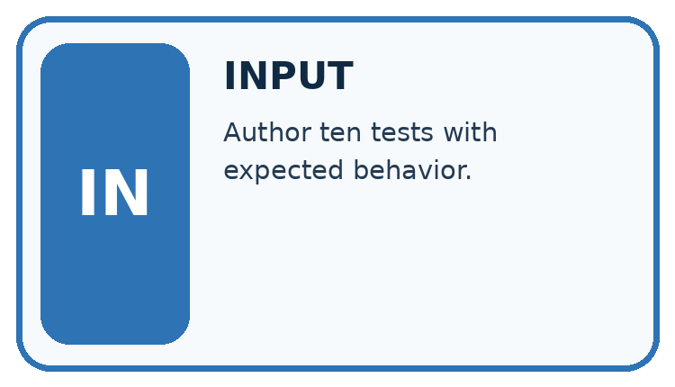
↓
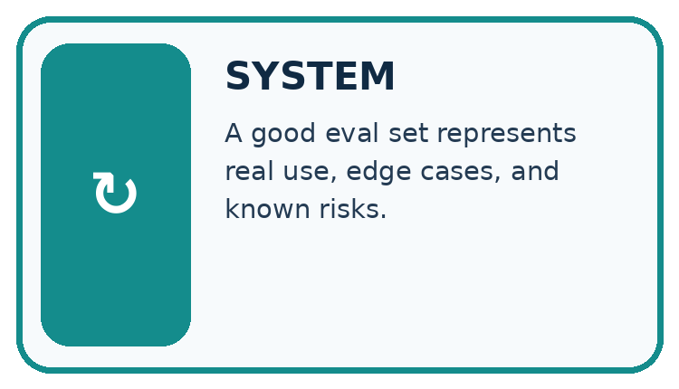
↓
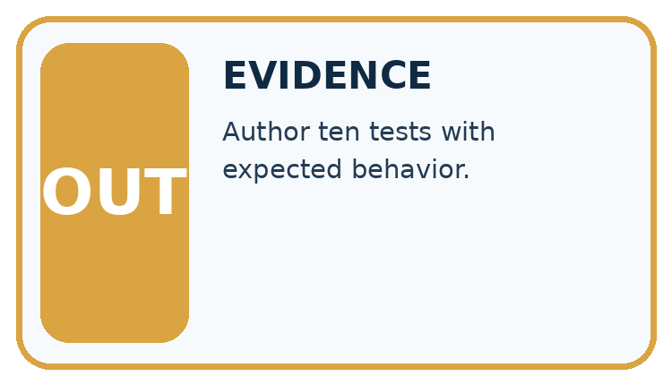
Which stage could fail even when the other two are correct? Explain:
A closer explanation
Record case ID, evidence version, expected claims or fallback, permitted actions and scoring rubric. Separate development from final cases. Aggregate metrics only after checking required conditions individually.
System evaluation sets — evidence trace
Before applying the procedure, write its units, denominator or decision boundary where relevant. A partner should be able to repeat each step using the same inputs. If a required input is absent or violates the stated contract, record that condition explicitly instead of quietly replacing it with a convenient value.
Apply the connected idea: Ranking and retrieval evaluation
Precision at k is relevant returned items divided by k when exactly k items are returned. Recall at k is relevant returned items divided by all known relevant eligible items. If the relevant set is unknown, do not invent recall.
Ranking and retrieval evaluation — evidence trace
Before applying the procedure, write its units, denominator or decision boundary where relevant. A partner should be able to repeat each step using the same inputs. If a required input is absent or violates the stated contract, record that condition explicitly instead of quietly replacing it with a convenient value.
Connect the picture and the explanation
Point to the input, the deciding step and the result in this week’s visual. Explain the same step in ordinary words. A picture helps when you can say what each part represents.
Student lesson · 4 of 17
Compare the cases
CASE GALLERY
Four Tests, Four Kinds of Evidence
A system is not understood until it survives more than one comfortable example.


NORMAL CASE: predict and name evidence. BOUNDARY CASE: predict and name evidence.


MISSING INFORMATION: predict and name evidence. TRANSFER CASE: predict and name evidence.
Which case is most likely to reveal a hidden assumption? Why?
Change one thing in the pictured case
Change: Add three missing-evidence cases that all pass.
Prediction: Overall becomes 8/9, but supported answering remains 2/3.
Reason: Changing the case mixture raises the pooled rate without improving any existing answerable result.
Student lesson · 5 of 17
Words that unlock the idea
VOCABULARY LAB
Words You Can Use to Reason
A definition matters when you can recognize the idea, use it, and contrast it with a near-miss.
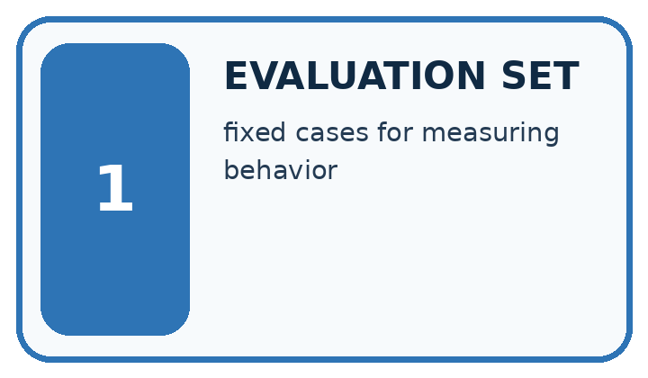
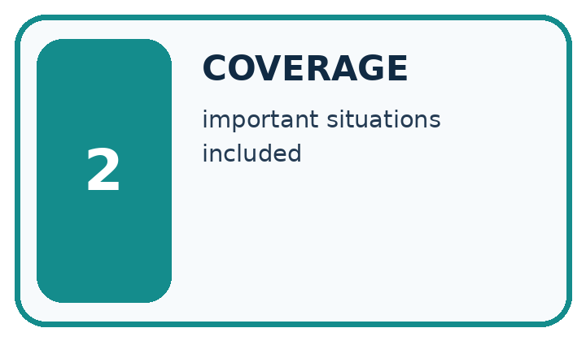
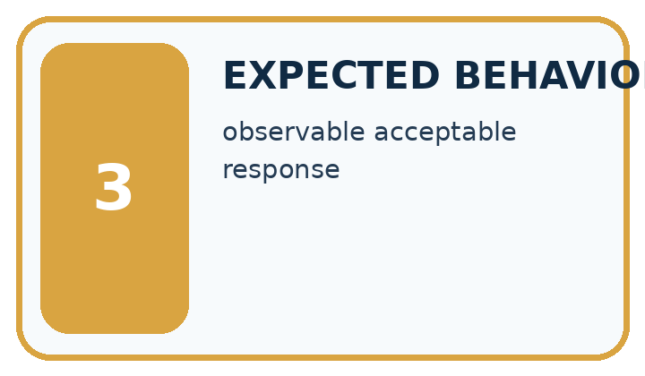
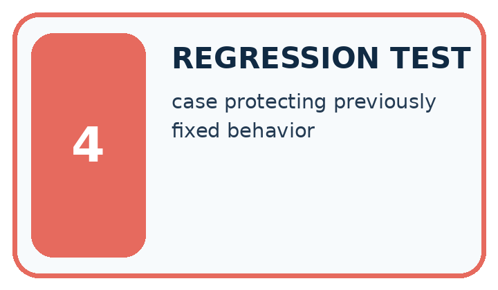
| Word | My own example | Not this / boundary |
|---|---|---|
| evaluation set | Cases used to measure a system under declared criteria; specify whether they are validation or final test cases. | |
| coverage | The range of relevant cases, conditions or groups included in data or tests. | |
| expected behavior | The result or action required by the specification for a given case, stated before observing the system. | |
| regression test | A repeatable check that previously correct behaviour still works after a change. |
Words used in the closer explanation
| Word | Meaning |
|---|---|
| Evaluation case | An input with evidence and prespecified expected behaviour |
| Contract pass | Satisfying the declared requirements for one case |
Terms for Ranking and retrieval evaluation
| Term | Meaning |
|---|---|
| Precision at k | Relevant results among the first k returned items |
| Recall at k | Fraction of known relevant eligible items found in the first k results |
| Cutoff | The rank limit used for scoring |
Student lesson · 6 of 17
Follow a worked example
WORKED EVIDENCE
Reason Step by Step
Predict first. Then check each step. A correct answer without visible reasoning is incomplete evidence.
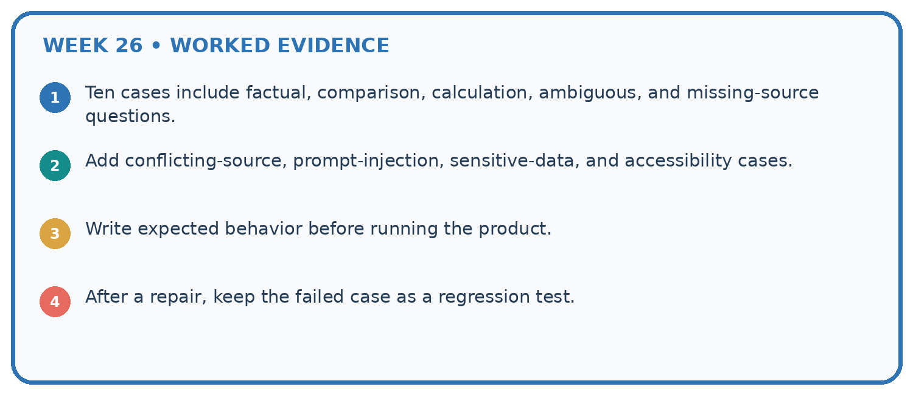
1. Ten cases include factual, comparison, calculation, ambiguous, and missing-source questions.
2. Add conflicting-source, prompt-injection, sensitive-data, and accessibility cases.
3. Write expected behavior before running the product.
4. After a repair, keep the failed case as a regression test.
Recalculate, retrace, or restate the reasoning in your own representation:
CHECK Did the evidence answer the exact question? Did the total, path, or source record stay consistent?
A closer explanation
Ten cases include six answerable and four missing-evidence cases. System answers five answerable correctly and abstains appropriately on three missing cases.
Answer correctness 5/6; appropriate fallback 3/4; combined contract passes 8/10 if each case has one required outcome. Different denominators answer different questions.
Compare the intermediate evidence with the final statement. Explain why each number or decision follows from the stated inputs. The conclusion belongs to this scenario and procedure; changing the inputs, evaluation population or authority can change what it establishes. Retain the raw record so a later revision can be compared honestly.
Apply the connected idea: Ranking and retrieval evaluation
Relevant documents are A, C, E. Top three results A, B, C contain two relevant items.
Precision@3=2/3; recall@3=2/3. Duplicates should not count as distinct retrieved documents.
Compare the intermediate evidence with the final statement. Explain why each number or decision follows from the stated inputs. The conclusion belongs to this scenario and procedure; changing the inputs, evaluation population or authority can change what it establishes. Retain the raw record so a later revision can be compared honestly.
Learn from the worked case
Cover the result before checking it. Say what is given, choose the procedure, and follow one step at a time. Then uncover the result and explain your first mismatch. Ask why a step is allowed, not only what number it produces.
A pictorial worked case: Evaluation Sets
Design an evaluation set that checks answering and appropriate uncertainty separately.
The facts we will use
Six toy questions: three have source answers and three do not. Results: 2 supported answers out of 3; 3 correct “not in source” responses out of 3.
All inputs and outcomes in this worked example are invented classroom data; no real model run is claimed.
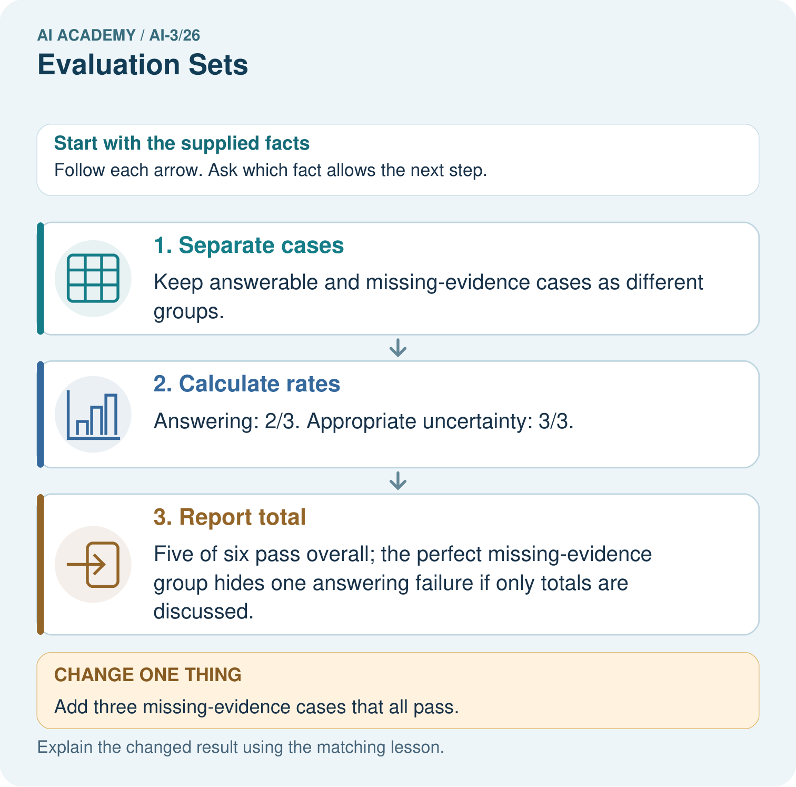
Read the picture one step at a time
Why this result follows
Read the picture in order. Five of six pass overall; the perfect missing-evidence group hides one answering failure if only totals are discussed. The arrows show which recorded input or intermediate result each decision uses. Explain the deciding step aloud before checking the changed case; pointing to the final answer alone does not show how it follows.
What this example does not establish
A small constructed set probes specific behaviours; its pooled rate is not an estimate of every future classroom question.
Read the labelled picture: Did the added cases demonstrate better answering? Point to the relevant step in the picture, then write the changed result and the rule or evidence that supports it.
Change one thing: Add three missing-evidence cases that all pass. Predict the result before checking the explanation. What remains the same?
Student lesson · 7 of 17
Find and repair a mistake
ERROR DETECTIVE
Compare → Diagnose → Repair
Do not patch the answer. Find the earliest unsupported assumption, wrong step, or weak evidence.
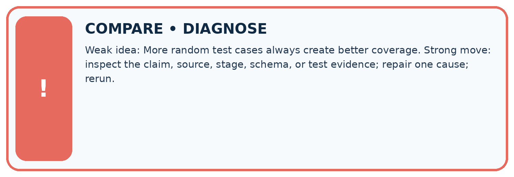
| Evidence record | Expected | Actual | Likely cause / next test |
|---|---|---|---|
| normal case | works | ||
| boundary case | stated rule | ||
| missing input | safe response | ||
| fresh transfer | generalizes |
Repair one cause. Why is this repair better than changing several things?
A closer explanation
Complete the supported workbook tasks before attempting W4 independently. Record any hints or help used. After feedback, use the teacher's fresh retry rather than copying the earlier answer. For a project, select a relevant new case, predict the outcome from the declared rule and preserve the result alongside any revision.
Apply the connected idea: Ranking and retrieval evaluation
Complete the supported workbook tasks before attempting W4 independently. Record any hints or help used. After feedback, use the teacher's fresh retry rather than copying the earlier answer. For a project, select a relevant new case, predict the outcome from the declared rule and preserve the result alongside any revision.
Student lesson · 8 of 17
Practise together
LOGIC STUDIO
Specify Before You Run
Prompts, schemas, retrieval, tool calls, and code are inspectable parts of one AI product.

SET task, audience, constraints, output_schema LOAD approved_context or retrieval_result CALL model or allowed_tool VALIDATE fields, claims, citations, and safety IF evidence missing: ask, retrieve, or abstain RETURN useful output + source trail + limitations
Trace one input. Which line changes the state or chooses a path?
A closer explanation
Evaluation coverage limits the claim; prompts tuned on these cases need new reserved final cases.
A useful check asks what would make the reasoning fail. Distinguish a failure to execute the declared procedure from a weakness in the procedure itself. The first may require a correction; the second requires an explicitly revised method and new evidence. Preserve unsuccessful cases so an improved result cannot hide the original problem.
Apply the connected idea: Ranking and retrieval evaluation
Known judgments may be incomplete; a score over one query does not establish coverage over all queries.
A useful check asks what would make the reasoning fail. Distinguish a failure to execute the declared procedure from a weakness in the procedure itself. The first may require a correction; the second requires an explicitly revised method and new evidence. Preserve unsuccessful cases so an improved result cannot hide the original problem.
Practise with less help: Trace the worked case
Use workbook W2 for the connected example “System evaluation sets”. First fill the input and rule boxes. Try the middle steps before asking for a hint. After a hint, try the next step yourself.
| Plan | Do | Check |
|---|---|---|
| What is given? Which rule or procedure applies? | Record each intermediate step. | Does the result follow? What remains unknown? |
Explain your trace to a partner. Your partner points to one step to check. Swap roles on the next case. Each person writes their own explanation.
Check your reasoning
Use the worked case for System evaluation sets. Proposed explanation: “The worked result establishes every future case”. Decide whether this explanation is supported. Point to the step or supplied fact that decides; explain your repair if needed.
Answer on your own before discussion. If you are unsure, say which step you need help with.
Practise the connected topic: Ranking and retrieval evaluation
Use its named workbook W2. Identify the given inputs, try the middle steps with less help, then explain your trace. Check this claim before group discussion: The worked result establishes every future case
Explain the picture
Did the added cases demonstrate better answering? Point to the relevant step in the picture, then write the changed result and the rule or evidence that supports it.
This is supported practice. Keep the separately named independent case for an attempt before feedback.
Student lesson · 9 of 17
Run the investigation
EVIDENCE LAB
Predict → Test → Record → Explain
Keep expected and actual results separate. Surprises are useful data when recorded honestly.
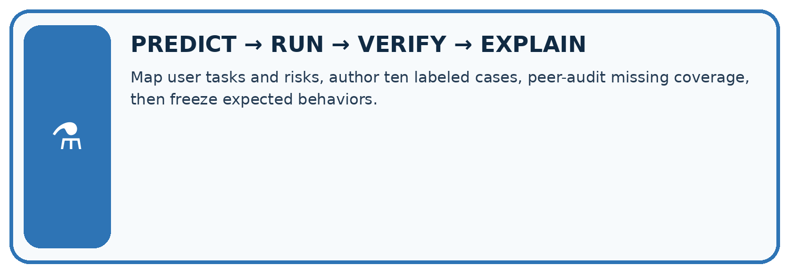
Map user tasks and risks, author ten labeled cases, peer-audit missing coverage, then freeze expected behaviors.
| Test / input | Prediction | Actual | Evidence / calculation | Change or keep? |
|---|---|---|---|---|
| normal | ||||
| boundary | ||||
| missing | ||||
| fresh transfer |
What did the hardest test teach you that the normal test did not?
Plan → try → check
Before trying: what do I expect, and why? While trying: which step could first go wrong? Afterwards: what did I actually observe, and what should change? Keep “not run” if you only traced the procedure.
Student lesson · 10 of 17
Build your understanding
MASTERY
From Knowing the Word to Owning the Idea
Move upward only when you can produce evidence without copying the worked example.

1 • NAME: Define the concept without repeating the textbook.
2 • TRACE: Show the information, state, branch, calculation, or evidence path.
3 • APPLY: Solve a different example independently.
4 • CHALLENGE: Find a boundary case, counterexample, or unfair outcome.
5 • EXPLAIN LIMITS: Say when the result should not be trusted or used alone.
My strongest evidence of independent understanding:
Student lesson · 11 of 17
Connect your project
CUMULATIVE PROJECT
Verified Study Buddy
Every week adds one inspectable piece. The system must show how it reached a result.
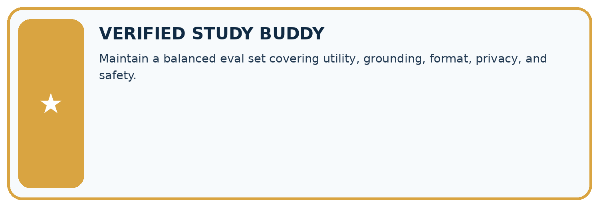
THIS WEEK’S CHECKPOINT Maintain a balanced eval set covering utility, grounding, format, privacy, and safety.
SYSTEM MAP Learner need → prompt/schema → approved sources/retrieval → model/tool → structured answer → verification → human decision
What will you add, change, or verify in the project this week?
What should remain under human control?
RESPONSIBLE DESIGN Collect only necessary information. Show uncertainty and limits. Never confuse fluent output with verified truth.
Evidence for your project
For your Verified Study Buddy, save the input, procedure, observed result and limitation of this check. Label this worked example as practice; use a different, previously unreviewed case when checking independent understanding.
Student lesson · 12 of 17
Show what you know
INDEPENDENT MASTERY PROOF
Explain • Transfer • Test • Defend
Complete this page without copying the worked example. Your reasoning matters more than decoration.
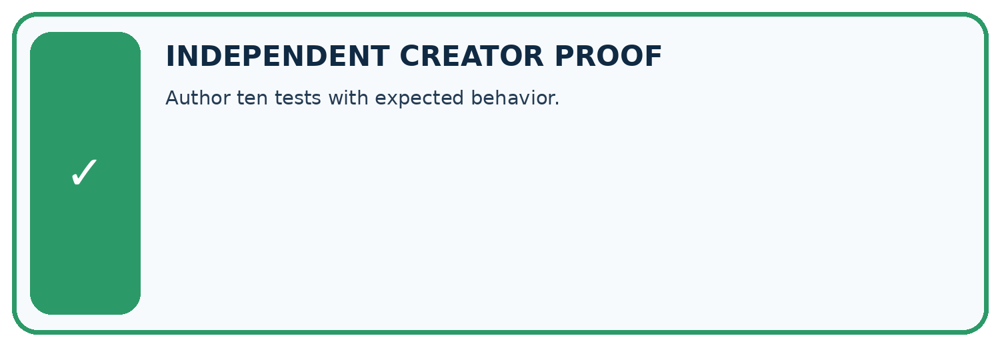
CHALLENGE Author ten tests with expected behavior.
1. My fresh example, trace, calculation, or design:
2. My evidence that it works (include a boundary or missing-data case):
3. One limitation, fairness concern, or situation needing human review:
SELF-CHECK □ I explained the mechanism □ I used evidence □ I tested a fresh case □ I named a limitation □ I can answer ‘why?’
Student lesson · 13 of 17
Study a complete case
Week 26 Worked case
Use the supplied details to practise the weekly concept before attempting the independent question. This case extends the illustrated lesson.
The situation
Ten evaluation questions are easy definitions; none lacks a source.
The question
What is untested?
Worked explanation
Absent evidence, ambiguity and boundary handling. Add predefined fallback cases and keep final cases separate from tuning.
Explain it in your own words
Which detail supports the answer, and why does it matter?
Trace the supplied case visually
Empty evaluation categories reveal gaps
| Evidence or stage | Value or result |
|---|---|
| Easy definitions | 10 |
| Absent evidence | 0 |
| Ambiguity | 0 |
| Boundary handling | 0 |
Ten evaluation questions are easy definitions; none lacks a source.
What is untested?
Absent evidence, ambiguity and boundary handling. Add predefined fallback cases and keep final cases separate from tuning.
Student lesson · 14 of 17
Try a new case independently
Independent case: Changed independent case
Approved notes: Robotics Tuesday Room2; Art Wednesday Room5. Requests: “Where does the club meet?” and “Who leads drama?” An unversioned added note says Robotics Room3. Design checks and safe responses.
Attempt this case before feedback. Record any help. Earlier examples below are further practice; a case already practised with feedback cannot establish fresh transfer.
Week 26 Independent application
Close the worked explanation. Apply the idea to this different question without copying.
You improve a prompt after reading every test question. Can those questions still provide an untouched final evaluation? Propose a repair.
My answer, with a trace, calculation or supporting evidence
Create and test
Change one relevant detail. Predict the result before testing. Include a boundary or missing-information case when it helps reveal a limit.
My changed input and expected result
Connect to your project
Maintain a balanced eval set covering utility, grounding, format, privacy, and safety.
The evidence I will keep
Your teacher has the independent answer and scoring criteria. Complete the matching workbook week to keep your practice evidence together.
Transfer practice from the original programme
A test set contains ten easy questions with direct answers in the notes. Add three different kinds of cases that probe fallback behaviour and define expected outcomes.
Use feedback to improve
Attempt the independent case before hints. Record whether you worked alone, used a hint or followed a model. After feedback, fix the first unsupported step and explain why it changed. A later check uses a changed case, not a copied answer.
Student lesson · 15 of 17
Your lesson route
Start with this question: Design an evaluation set that checks answering and appropriate uncertainty separately.
| By the end, I can | How I will show it |
|---|---|
| Explain the mechanism and terminology of system evaluation sets | Explain the deciding step, show a trace or test, and state one limit. |
| Apply the stated procedure to a new case with a traceable result | Explain the deciding step, show a trace or test, and state one limit. |
| Identify an assumption or limitation and design a revealing follow-up | Explain the deciding step, show a trace or test, and state one limit. |
Remember → watch and explain → try with help → investigate → try independently → keep project evidence. Your teacher may spread this lesson across several classes.
Keep your first prediction. Compare it with what the evidence shows and explain any change.
Student lesson · 16 of 17
Finish and return
Close your notes. Explain this goal in your own words: Explain the mechanism and terminology of system evaluation sets
If you are unsure, return to the worked picture and explain one arrow. If you are ready, change an input or assumption and justify your prediction.
Save your workbook evidence. At the next review, try a different case before opening your old answer.
Student lesson · 17 of 17
Supported practice, repair and portfolio
Use this supported practice once, in the browser or on paper. Keep the reserved independent assessment for a separate first attempt before teacher feedback.
Design an evaluation set that checks answering and appropriate uncertainty separately.
Practice 1: explain the deciding evidence
Which labelled step matches this detail? Five of six pass overall; the perfect missing-evidence group hides one answering failure if only totals are discussed.
1. Separate cases
2. Calculate rates
3. Report total
Hint if needed: Read the steps in the pictorial case. Match the supplied detail to the stage that performs or records it.
After your attempt, compare with the supported explanation: Report total Five of six pass overall; the perfect missing-evidence group hides one answering failure if only totals are discussed. Read the picture in order. Five of six pass overall; the perfect missing-evidence group hides one answering failure if only totals are discussed. The arrows show which recorded input or intermediate result each decision uses. Explain the deciding step aloud before checking the changed case; pointing to the final answer alone does not show how it follows.
Practice 2: explain the deciding evidence
Changed-case practice: Add three missing-evidence cases that all pass. Which conclusion is supported by the supplied facts?
1. We can decide the result without examining the changed input or the procedure.
2. Overall becomes 8/9, but supported answering remains 2/3.
3. This one example guarantees correct results for every future input.
Hint if needed: Use the changed condition and the deciding step in the pictorial trace. The answer must say what follows from those facts.
After your attempt, compare with the supported explanation: Overall becomes 8/9, but supported answering remains 2/3. Changing the case mixture raises the pooled rate without improving any existing answerable result.
Repair a missing building block
Review Quality Rubrics (ai-3/25). Goal: Explain the mechanism and terminology of system evaluation sets. Short practice: Why is “one out of two checks passed” an insufficient release decision? Point to the relevant step in the picture, then write the changed result and the rule or evidence that supports it.. Return to this week and explain what you changed.
Review Block to Python Bridge (ai-3/23). Goal: Translate a short paper calculation into a Python script. Short practice: Trace the changed list and identify where the result differs. Point to the relevant step in the picture, then write the changed result and the rule or evidence that supports it.. Return to this week and explain what you changed.
Review Conversation State and Memory (ai-3/20). Goal: Explain the mechanism and terminology of conversation state and retention. Short practice: What is selected_book after the correction and after exit? Point to the relevant step in the picture, then write the changed result and the rule or evidence that supports it.. Return to this week and explain what you changed.
Keep your completed work
Use Download completed work in the hosted lesson to export your answers, reflections, practice feedback and code-run evidence. Open the HTML copy to read or print it. Drafts stay in this browser when storage is available; clear drafts on a shared device.